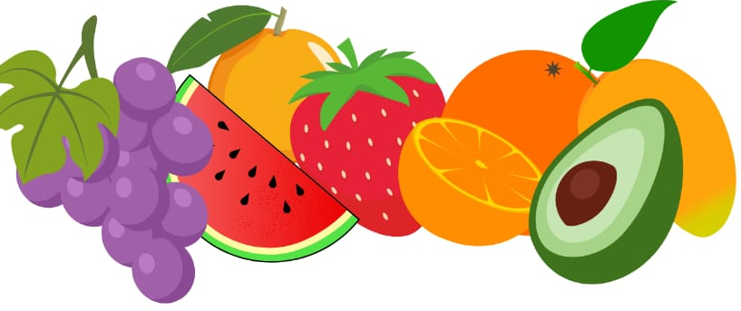

Frutas que são permitidas os animais comer:

Animais podem comer várias frutas, mas é essencial lembrar que cada espécie possui suas particularidades e necessidades alimentares específicas.
Cães
Maçã: Sem sementes.
Banana: Moderadamente, pois é rica em açúcares.
Mirtilo (blueberry): Ricos em antioxidantes.
Melancia: Sem sementes e casca.
Manga: Sem caroço.
Pera: Sem sementes.
Morango: Moderadamente.
Gatos
Melão: Sem sementes.
Melancia: Sem sementes e casca.
Mirtilo (blueberry): Em pequenas quantidades.
Banana: Em pequenas quantidades.
Coelhos